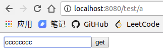

重定向与转发
SpringMVC为请求在控制器处理方法之间跳转的情况提供了重定向与转发机制，也就是说在SpringMVC中可以使用forward和redirect关键字在Controller中对原请求进行转发或重定向到其他的Controller。
在一般情况下，控制器处理方法返回字符串类型的值会被当成逻辑视图名处理，但如果字符串带”forward:”或”redirect:”前缀，则SpringMVC将当前请求转到另一个控制器进行处理：将”forward:”或”redirect:”当成指示符，其后的字符作为URL处理，区别在于redirect会让浏览器发起一个新的请求但属于同一个Session，而forwar请求与当前请求同属一个请求。
转发
forward操作发生在服务器内部,在前一个控制器处理完毕后,直接进入下一个控制器处理, 并将最后的response发给浏览器。这种方式的特点是:
- 转发前后是同一个request,后一个控制器处理方法可共享前一个控制器处理方法的参数与属性;
- 因为是同一个request,拦截器只会拦截前一个URL,如果前一个URL在映射时未配置到拦截器拦截，则拦截后一个URL，即只拦截一次;
- 最后返回到浏览器后,因为地址栏显示的是转发前的URL,所以刷新页面时会依次执行前后两个控制器;
举个栗子：
控制器代码：
|
|
前端界面a.jsp:
|
|
前端界面b.jsp:
|
|
在后面的例子中这2个前端界面是没有变化的，就不再重复说明了。
运行服务器访问结果：
我们发现请求参数是可以通过转发操作共享的，并且浏览器的URL没有变化。
重定向
redirect操作大致流程是这样的：服务器端会首先发一个response给浏览器, 然后浏览器收到这个response后再发一个requeset给服务器, 然后服务器发新的response给浏览器。这种方式的特点是:
- 在转发前后有两个不同的request对象,转发前后的两个控制器在request上的参数(request.getParameter())和request属性(request.getAttribute())不能共享;
- 如果转发前后的两个控制器都配置在spring拦截器范围内,这样拦截器会拦截前后两个request,即会拦截两次;
- 最后返回到浏览器后,因为地址栏显示的是转发后的URL,所以刷新页面时只会执行后面的URL映射的控制器处理方法；
我们来测试一下：
|
|
运行结果：
说明redirect操作是无法将原请求中的参数传递到重定向后的控制器方法中的，并且浏览器URL会变化。
如何才能在重定向操作中传递请求的参数呢？一种方法是拼接URL方法来传递，另外还可以使用HttpSession来传递参数。
RedirectAttributes
RedirectAttributes工具类来帮助我们传递参数，其本质是拼接URL来传递的：
|
|
运行结果：

通过RedirectAttributes我们得到了上次请求的参数，观察URL发现，其实RedirectAttributes类是帮助我们将原请求的参数写在了URL后面了。这里需要说明的是，使用RedirectAttributes类的addAttribute方法传递参数会将参数写在URL后面；使用RedirectAttributes类的addFlashAttribute方法传递参数不会体现在URL上面，会把该参数值暂时保存于session，待重定向URL获取该参数后从session中移除。
HttpSession
通过Session来传递重定向请求参数，请求参数不会出现在URL中：
|
|
运行结果：
在实际编程的时候，直接在控制处理方法入参使用HttpSession类型的参数的话不利于调试，我们可以在类定义处使用@SessionAttributes注解来替代，将参数存入session会话中。
结合之前那篇讲SpringMVC的参数传递的博客来讲讲SpringMVC在处理@ModelAttributes与@SessionAttributes同时存在的情况下，流程是这样的：
- SpringMVC在调用控制器处理方法前，在请求线程中自动创建一个隐含的模型对象
- 调用所有标注了@ModelAttribute的方法，并将方法返回值添加到隐含模型中
- 查看Session中是否存在@SessionAttributes(“xxx”)所指定的xxx属性，如果有，则将其添加到隐含模型。如果隐含模型中已经有xxx属性，则该步操作会覆盖模型中已有的属性值
- 对标注了@ModelAttribute(“xxx”)处理方法的入参按如下流程处理：
4.1 如果隐含模型拥有名为xxx的属性，则将其赋给该入参，再用请求消息填充该入参对象直接返回，否则转到4.2
4.2 如果xxx是会话属性，即在处理类定义处标注了@SessionAttributes(“xxx”)，则尝试从会话中获取该属性，并将其赋给该入参，然后再用请求消息填充该入参对象。如果在会话中找不到对应的属性，则抛出HttpSessionRequiredException异常。否则转到4.3
4.3 如果隐含模型中不存在xxx属性，且xxx也不是会话属性，则创建入参的对象实例，然后再用请求消息填充该入参
总结
Stack Overflow上有一个关于重定向与转发的回答，我觉得讲的挺概括的，这里我就直接搬运过来作为总结吧：
Forward: is faster, the client browser is not involved, the browser displays the original URL, the request is transfered do the forwarded URL.
Redirect: is slower, the client browser is involved, the browser displays the redirected URL, it creates a new request to the redirected URL.